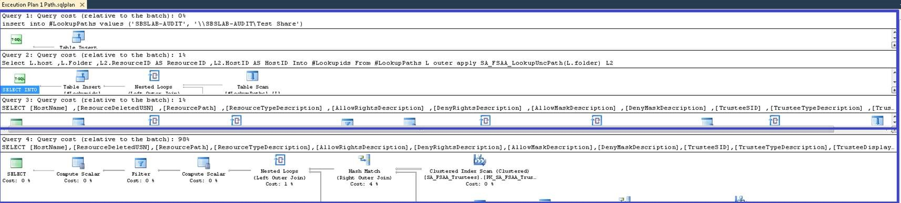
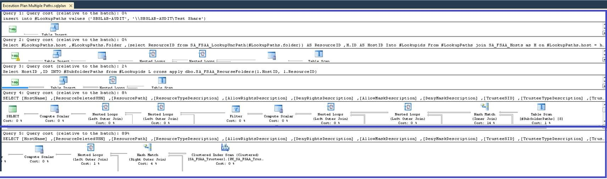

Question
Running File System queries against text values can be very time consuming and inefficient—how can this be fixed?
Answer
We have indexed columns, such as HostID and Resource ID, that are a lot faster to search against and built functions in to get these indexed values that can speed up queries against FSAA tables and views.
The script below is compared to text searches on Local Path as UNC path is not available on SA_FSAA_DirectPermissionsView. This would be a realistic comparison if the customer has both available.
Comparing the execution plan:
-
Against a single path − using this script below took up 2% of the Query Cost compared to 98% using a text search against the local path directly against the View, such as:
Where [ResourcePath] = 'C:\Shares\Test Share'. -
Against a path and all of its subfolders − using this script below took up 11% of the Query Cost compared to 89% using a text search with wild against the local path directly against the View, such as:
Where [ResourcePath] like 'C:\Shares\Test Share%'.
SQL Script − Instructions
A SQL script was created to search File System tables using indexed values while being supplied the UNC path.
Update Hosts and UNC Paths needed for Report. Rename SA_Custom_table to something meaningful. If subfolders are needed, uncomment\comment out the sections marked. The SQL script below will find the HostID and ResourceID of the UNC Paths for use later in the SQL script. This example uses SA_FSAA_DirectPermissionsView, but this principle can be applied to most FS Tables\Views.
NOTE: The updated script eliminates the need to enter the server name and changes the variable name to value which makes it easy to port into StealthAUDIT/Enterprise Auditor and use the Configuration Variables available in the Analysis. The Nested Level in the subfolder Temp table was also exposed.
if OBJECT_ID('tempdb..#LookupPaths', 'u') is not null
drop table #LookupPaths
begin
create table #LookupPaths ([Value] varchar(256) not null )
insert into #LookupPaths values ('\\FS02\accounting')
-- insert into #LookupPaths values ('\\UNCPath\Folder') --works with multiple UNC Paths
end
if OBJECT_ID('tempdb..#Lookupids', 'u') is not null
drop table #Lookupids
Select
L.[Value]
,L2.ResourceID AS ResourceID
,L2.HostID AS HostID
Into #Lookupids
From #LookupPaths L
outer apply SA_FSAA_LookupUncPath(L.[Value]) L2
if OBJECT_ID('tempdb..#SubfolderPaths', 'u') is not null
drop table #SubfolderPaths
----Add this section in to include subfolders
--Select HostID
-- ,ID
-- ,nestedlevel
--INTO #SubfolderPaths
--from #Lookupids L
--cross apply dbo.SA_FSAA_RecurseFolders(l.HostID, l.ResourceID)
IF OBJECT_ID('SA_Custom_table', 'U') IS NOT NULL
DROP TABLE SA_Custom_table
--This example uses SA_FSAA_DirectPermissionsView, but this principle can be applied to most FS Tables\Views
SELECT [HostName]
,[ResourceDeletedUSN]
,[ResourcePath]
,[ResourceTypeDescription]
,[AllowRightsDescription]
,[DenyRightsDescription]
,[AllowMaskDescription]
,[DenyMaskDescription]
,[TrusteeSID]
,[TrusteeTypeDescription]
,[TrusteeDisplayName]
,[TrusteeDomain]
,[TrusteeNTName]
Into SA_Custom_table
FROM [SA_FSAA_DirectPermissionsView] D
--Use this section to target just the target Path (Comment out to target Subfolders)
inner join #Lookupids L
on D.[HostID] = L.HostID
and d.[ResourceID] = L.[ResourceID]
----Use this section to include all subfolders
--inner join #SubfolderPaths S
--on D.[HostID] = S.HostID
--and d.[ResourceID] = S.[ID]
drop table #Lookupids
drop table #LookupPaths
----Add this section if including subfolders
--drop table #SubfolderPaths